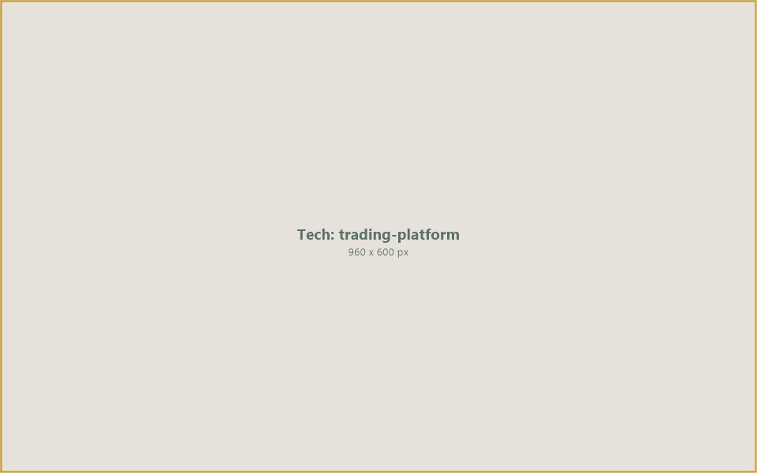
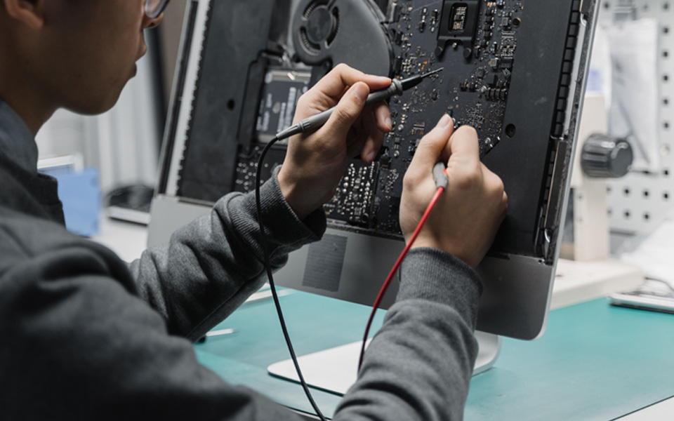
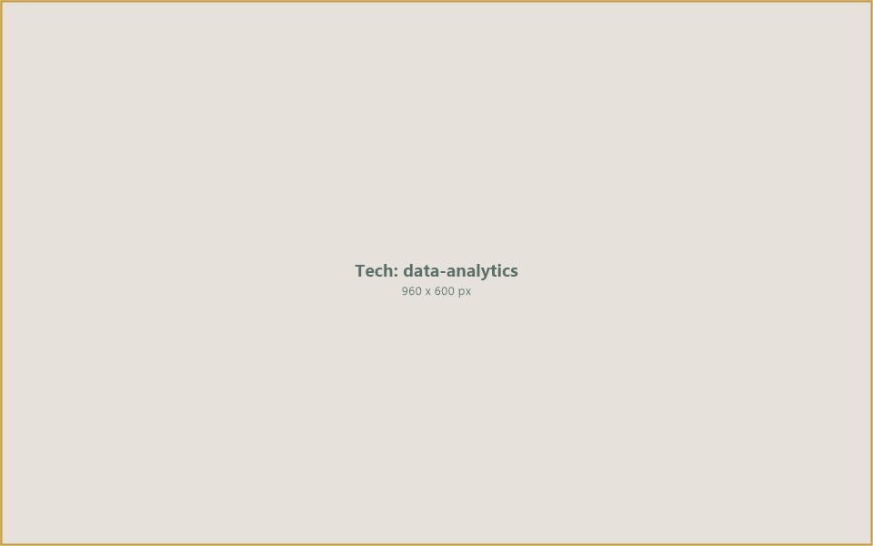

Technology & Industrial Solutions
Supporting the sourcing and international trade of technology equipment, industrial machinery, and smart business solutions through trusted global manufacturers and suppliers.
Sourcing Technology & Industrial Equipment
Recognising the growing demand for advanced technologies, IIC General Trading LLC-FZ supports the sourcing and international trade of technology and industrial equipment through trusted global manufacturers and suppliers.
Businesses across emerging markets face significant challenges in procuring high-quality IT equipment, telecommunications infrastructure, industrial machinery, and renewable energy components. Fragmented supply chains, unverified suppliers, and limited access to trade finance create barriers that prevent organisations from accessing the technology they need to grow.
IIC Worldwide bridges this gap by connecting buyers with verified manufacturers and suppliers — providing the sourcing expertise, trade finance, and logistics coordination required to move technology and industrial equipment across international borders efficiently and reliably.
Our capabilities span from information technology and telecommunications to industrial machinery, electrical equipment, renewable energy components, and smart business solutions — serving governments, enterprises, and institutional buyers across the Middle East, Africa, Asia, and Europe.
How We Facilitate Technology Trade
IIC connects buyers of technology and industrial equipment with verified global manufacturers and suppliers — handling sourcing, verification, trade finance, and logistics.

Global Sourcing Network960 x 600 pxGlobal Sourcing Network
IIC maintains relationships with trusted technology manufacturers, OEMs, and authorised distributors across North America and Asia. Our sourcing team identifies the right suppliers for each procurement requirement — whether a government agency needs telecommunications infrastructure, an enterprise requires IT hardware, or a contractor is sourcing industrial machinery. Every supplier undergoes verification for product authenticity, manufacturing capacity, and regulatory compliance before joining our network.
Trade Finance for Equipment
Large-scale technology and industrial equipment purchases require structured financing. IIC provides trade finance solutions including letters of credit, deferred payment arrangements, and structured funding that enable buyers to acquire the equipment they need. Our financial solutions are tailored to the realities of equipment procurement — supporting milestone-based payments, pre-shipment financing, and post-delivery credit terms that align with project timelines and budgets.

Quality Assurance960 x 600 pxQuality Assurance & Compliance
Technology and industrial equipment must meet specific technical standards, certifications, and regulatory requirements for each destination market. IIC coordinates pre-shipment inspections, product certification, and compliance documentation to ensure that every item delivered meets the buyer’s specifications. We work with accredited testing laboratories and certification bodies to verify product quality, safety standards, and warranty terms before goods leave the manufacturer.

Logistics & Delivery960 x 600 pxLogistics & Delivery
Moving technology and industrial equipment across borders requires specialised logistics — from packaging and freight forwarding to customs clearance and last-mile delivery. IIC coordinates the full logistics chain, working with freight partners, customs brokers, and in-country delivery agents to ensure equipment arrives safely, on time, and with all necessary documentation for import clearance and installation.
Technology & Equipment We Source
Our sourcing capabilities span across key technology and industrial categories, connecting buyers with verified manufacturers and suppliers worldwide.
Information Technology (IT) Equipment
Servers, networking equipment, data centre infrastructure, storage systems, and enterprise IT solutions sourced from leading global manufacturers for government and corporate buyers.
Computer Hardware & Accessories
Desktops, laptops, monitors, printers, peripherals, and accessories — procured in bulk from authorised distributors for enterprises, institutions, and government projects.
Telecommunications Equipment
Mobile network infrastructure, fibre optic equipment, radio systems, satellite communications, and telecom towers — supporting operators and governments building connectivity.
Industrial Machinery
Heavy machinery, manufacturing equipment, processing plants, and industrial tools sourced from OEMs for construction, mining, agriculture, and manufacturing sectors.
Electrical Equipment
Transformers, switchgear, cables, generators, and power distribution systems — connecting electrical equipment manufacturers with utility companies and infrastructure developers.
Renewable Energy & Solar Equipment
Solar panels, inverters, battery storage, wind turbine components, and renewable energy installation equipment — sourced for projects across emerging markets.
Smart Business Solutions
Enterprise software, cloud infrastructure, cybersecurity systems, and digital transformation solutions — enabling businesses to modernise operations and improve productivity.
Automation & Industrial Systems
PLC systems, SCADA, robotics, conveyor systems, and process automation equipment — supporting factories, plants, and industrial operations seeking efficiency through automation.
IIC Worldwide is building a trusted sourcing and trade platform for technology and industrial equipment — connecting buyers in emerging markets with the world’s leading manufacturers and suppliers. By combining sourcing expertise with trade finance, quality assurance, and logistics coordination, we make it possible for organisations to procure the technology they need to grow.
From IT infrastructure and telecommunications to industrial machinery and renewable energy components, our capabilities are designed to serve the real procurement needs of governments, enterprises, and institutions across the Middle East, Africa, Asia, and Europe.
Source Technology & Industrial Equipment
Connect with IIC Worldwide to explore sourcing opportunities for IT equipment, industrial machinery, telecommunications, and renewable energy components.